Chapter 2 Text Mining
Text mining is the process of distilling actionable insights from text, typically by identifying patterns with statistical pattern learning. Commong text mining tasks include topic modeling, sentiment analysis, classification modeling.
Be aware that there are two main approaches to text mining. Semantic parsing identifies words by type and order (sentences, phrases, nouns/verbs, proper nouns, etc.). Bag of words simply treats words as attributes of the document. Bag of words is the simpler way to go, the only one I’ve encountered, and the one used throughout these notes.
There are three packages with text mining frameworks: tidytext, stm, and tm. These notes mostly use tidytext, but I made an appendix with tm basics because tidytext uses its class structure (see cast_dtm()).
As much as possible, I will build examples using the text from The Adventures of Tom Sawyer, available on https://gutenberg.org and accessible using the gutenbergr package. I added the chapter identifier and dropped the book id column. Each row is a line of text <=80 characters long.
library(gutenbergr)
sawyer_raw <- gutenberg_works(title == "The Adventures of Tom Sawyer") %>%
gutenberg_download()
sawyer <- sawyer_raw %>%
tail(-455) %>% # chapter 1 starts on line 456
mutate(
is_chap = str_detect(text, regex("^chapter [\\divxlc]", ignore_case = TRUE)),
chapter = cumsum(is_chap)
) %>%
select(chapter, text)
skimr::skim(sawyer)| Name | sawyer |
| Number of rows | 8377 |
| Number of columns | 2 |
| _______________________ | |
| Column type frequency: | |
| character | 1 |
| numeric | 1 |
| ________________________ | |
| Group variables | None |
Variable type: character
| skim_variable | n_missing | complete_rate | min | max | empty | n_unique | whitespace |
|---|---|---|---|---|---|---|---|
| text | 0 | 1 | 0 | 78 | 1993 | 6345 | 0 |
Variable type: numeric
| skim_variable | n_missing | complete_rate | mean | sd | p0 | p25 | p50 | p75 | p100 | hist |
|---|---|---|---|---|---|---|---|---|---|---|
| chapter | 0 | 1 | 17.24 | 10.46 | 1 | 7 | 16 | 26 | 35 | ▇▆▆▅▇ |
2.1 Topic Modeling Chapter
Topic models are generative probabilistic models to quantitatively investigate a large text corpora. In generative probability models, the researcher postulates a model of a data-generating process, then uses the corpus data to find the most likely values for the parameters within the model.
Topic models such as Latent Dirichlet Allocation (LDA) and Structural Topic Modeling (STM) treat documents within a corpora as a “bags of words” and identifies groups of words that tend to co-occur. These groups of words are the topics, formally conceptualized as probability distributions over vocabulary. While the topics are a product of model estimation, the topic name and interpretation are assigned by the researcher by examining the most important words for each topic and the particular texts featuring a topic most prominently. They are not produced to match words and documents to concrete issues specified in advance by the researcher as they would be in a supervised model.
LDA and STM are generative models, meaning you define a data generating process for each document then use the document text to find the most likely values for the model parameters. The generative model defines document-topic and word-topic distributions generating documents. The sum of topic proportions (topical prevalence) in each document is one, and the sum of word probabilities in each topic (topical content) is one. STM differs from LDA in that it uses document metadata as covariates to explain prevalence and topical content.
Whether you use LDA or STM, you’ll start by creating a bag-of-words representation of the data. In the chunk below, I lemmatize the tokens and remove my own list of stop words (e.g., “tom” is so common that I don’t want to include it in anything.).
my_stop_words <- c("tom")
sawyer_tokens <- sawyer %>%
unnest_tokens(output = "word", input = text, token = "words") %>%
mutate(word_stem = lemmatize_words(word)) %>%
anti_join(stop_words, by = "word") %>%
filter(!word %in% my_stop_words)It’s a good idea to explore the data before modeling. One good way to do that is with the TF-IDF statistic. A term’s frequency (TF) is its proportion of the words in the document. The inverse document frequency (IDF) is the log of the inverse ratio of documents in which the term appears. The product of TF and IDF (TF-IDF) indicates how important a word is to a document in a collection or corpus. In this case, the TF-IDF indicates how important a word is to the chapter. A term’s TF-IDF increases with its frequency in the document (chapter) and decreases with the number of documents (chapters) in the corpus that contain it. Use tidytext::bind_tf_idf() to append the tf, idf, and tf_idf columns to your data frame. Figure 2.1.
sawywer_tf_idf <- sawyer_tokens %>%
count(chapter, word_stem, sort = TRUE) %>%
bind_tf_idf(word_stem, chapter, n) %>%
group_by(chapter) %>%
slice_max(order_by = tf_idf, n = 10) %>%
ungroup()
sawywer_tf_idf %>%
filter(chapter <= 6) %>%
mutate(word_stem = reorder_within(word_stem, by = tf_idf, within = chapter)) %>%
ggplot(aes(word_stem, tf_idf, fill = as.factor(chapter))) +
geom_col(alpha = 0.8, show.legend = FALSE) +
scale_fill_manual(values = RColorBrewer::brewer.pal(n = 6, name = "Set2"), name = "Topic") +
facet_wrap(~ chapter, scales = "free", ncol = 3) +
scale_x_reordered() +
coord_flip() +
theme(strip.text=element_text(size=11)) +
labs(x = NULL, y = "tf-idf",
title = "Highest tf-idf words in The Adventures of Tom Sawyer (ch 1-6)",
subtitle = "Individual chapters focus on different characters and narrative elements")Figure 2.1: Here is a nice figure!
2.1.1 LDA
LDA treats each document as a mixture of topics (X% topic A, Y% topic B, etc.), and each topic as a mixture of word probabilities (x% word a, y% word b, etc.) for all words in the corpus. LDA is implemented in the topicmodels package.
Prepare the data by creating a document-term matrix. You will improve performance by removing infrequently appearing tokens with tm::removeSparseTemrs().
sawyer_dtm <- sawyer_tokens %>%
count(chapter, word_stem) %>%
cast_dtm(document = chapter, term = word_stem, value = n) %>%
tm::removeSparseTerms(sparse = 0.9)
sawyer_dtm## <<DocumentTermMatrix (documents: 35, terms: 1213)>>
## Non-/sparse entries: 9933/32522
## Sparsity : 77%
## Maximal term length: 13
## Weighting : term frequency (tf)LDA is an optimization algorithm that performs a random search through the parameter space to find the model with the largest log-likelihood. There are multiple search algorithms, but the preferred one appears to be Gibbs sampling, a type of Monte Carlo Markov Chain (MCMC) algorithm.
Create a topic model with topicmodels::LDA(). Parameter k specifies the number of topics. In general, you only want as many topics as are clearly distinct and that you can easily communicate to others. You can use the perplexity statistic to help identify k. Perplexity is a measure of how well a probability model fits a new set of data. Look for the elbow in a scree plot. Here are models with 5 - 50 topics.
set.seed(1012)
train_ind <- sample(nrow(sawyer_dtm), floor(0.75*nrow(sawyer_dtm)))
sawyer_train <- sawyer_dtm[train_ind, ]
sawyer_test <- sawyer_dtm[-train_ind, ]
k = c(seq(from = 5, to = 50, by = 5))
perp <- k %>%
map(~ LDA(sawyer_train, k = .x, method = "Gibbs", control = list(seed = 1234))) %>%
map(~ perplexity(.x, newdata = sawyer_test)) %>%
as.numeric()
data.frame(k = k, perplexity = perp) %>%
ggplot(aes(x = k, y = perplexity)) +
geom_point() +
geom_smooth(method = "loess", se = FALSE) +
labs(title = "Perplexity Plot for LDM model",
subtitle = "Elbow at k = 30?")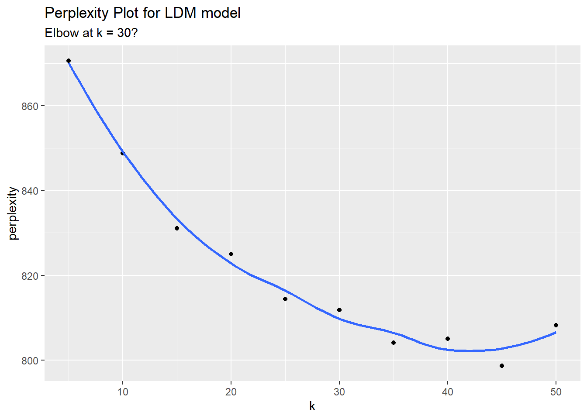
There may be an elbow at k = 15 topics. Using STM, the optimal number of clusters was 30. That looks like an elbow to me too. Frankly, if my arm looked like that I would consult an orthopedic surgeon.
LDA() returns two outputs: a “beta” matrix of probabilities of terms belonging to topics; a “gamma” matrix of probabilities of topics contributing to documents. The tidytext package provides a tidy() method for extracting these matrices.
sawyer_lda_beta <- tidy(sawyer_lda, matrix = "beta")
sawyer_lda_gamma <- tidy(sawyer_lda, matrix = "gamma", document_names = rownames(sawyer_dfm))
# All sums equal 1
# sawyer_lda_beta %>% group_by(topic) %>% summarize(.groups = "drop", sum_beta = sum(beta))
# sawyer_lda_gamma %>% group_by(document) %>% summarize(.groups = "drop", sum_beta = sum(gamma))I have 30 topics here, so it would be hard to show the top words per topic, but here are the first six topics.
sawyer_lda_beta %>%
filter(topic <= 6) %>%
group_by(topic) %>%
slice_max(order_by = beta, n = 10, with_ties = FALSE) %>%
mutate(term = reorder_within(term, beta, topic)) %>%
ggplot(aes(x = term, y = beta, fill = factor(topic))) +
geom_col(show.legend = FALSE) +
scale_fill_manual(values = RColorBrewer::brewer.pal(n = 6, name = "Set2"), name = "Topic") +
scale_x_reordered() +
coord_flip() +
facet_wrap(~ topic, scales = "free") +
labs(title = "LDA Beta Matrix for first six topics",
subtitle = "Showing top 10 word probabilities")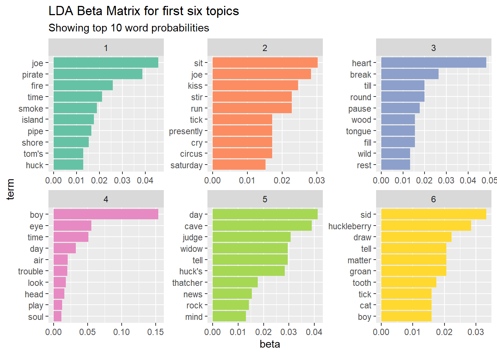
You can use a Word cloud as an alternative to the bar chart. The advantage of the word cloud is that it creates an instantaneous impression rather than providing you the analytic means to construct the same conclusion. Here are word clouds for the first two topics.
colors6 <- RColorBrewer::brewer.pal(n = 6, name = "Set2")
x <- map(c(1:2), ~ with(sawyer_lda_beta %>% filter(topic == .x),
wordcloud::wordcloud(term, beta, max.words = 20,
colors = colors6[.x])))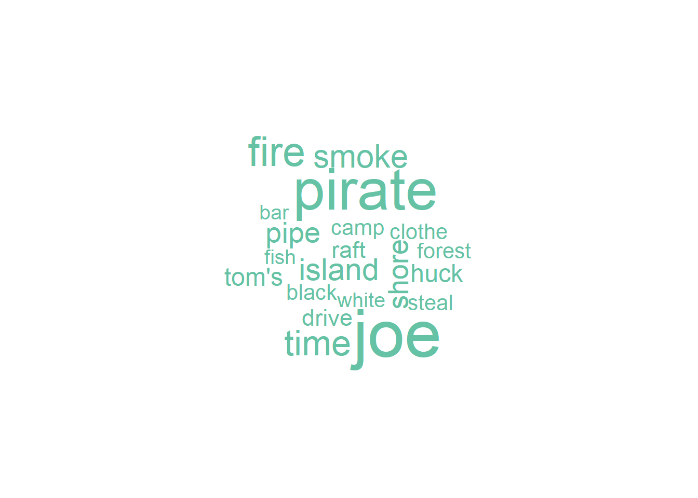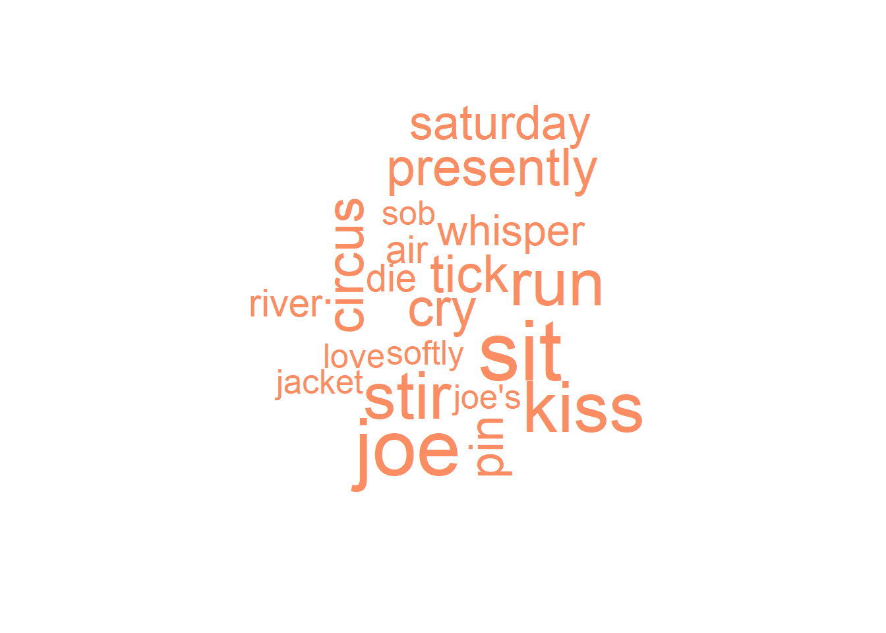
And here are the most prevalent topics across chapters. The figure shows the average probability that the topic appears in the chapter for all chapters.
top_terms <- sawyer_lda_beta %>%
group_by(topic) %>%
slice_max(order_by = beta, n = 7) %>%
summarise(.groups = "drop", terms = list(term)) %>%
mutate(terms = map(terms, paste, collapse = ", ")) %>%
unnest(terms)
sawyer_lda_gamma %>%
group_by(topic) %>%
summarize(.groups = "drop", gamma = mean(gamma)) %>%
left_join(top_terms, by = "topic") %>%
mutate(topic = paste("topic", topic),
topic = fct_reorder(topic, gamma)) %>%
slice_max(order_by = gamma, n = 10) %>%
ggplot(aes(x = topic, y = gamma, label = terms)) +
geom_col(fill = "#D8A7B1", show.legend = FALSE) +
geom_text(hjust = 0, nudge_y = 0.0005, size = 3) +
coord_flip() +
scale_y_continuous(expand = c(0,0),
limits = c(0, 0.09),
labels = scales::percent_format()) +
theme_minimal() +
theme(panel.grid = element_blank()) +
labs(x = NULL, y = expression(gamma),
title = "Top 10 LDA topics by prevalence in The Adentures of Tom Sawyer",
subtitle = "With top words in each topic")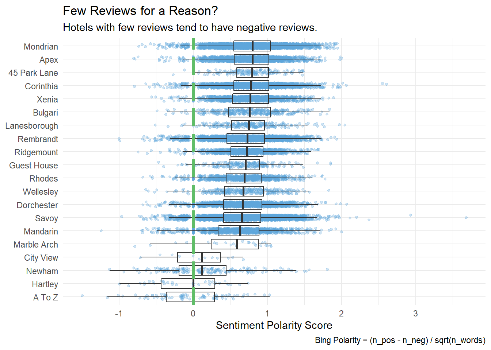
Another way to look at the betas is to identify terms that had the greatest difference in beta between the first and second most probable topic. A good way to do this is with their log ratio, \(log_2(\beta_2 / \beta_1)\). Filter for relatively common words having a beta greater than 1/100 in at least one topic.
sawyer_lda_beta %>%
mutate(topic = paste0("topic", topic)) %>%
group_by(term) %>%
slice_max(order_by = beta, n = 2) %>%
summarize(.groups = "drop", min_beta = min(beta), max_beta = max(beta)) %>%
filter(max_beta > 0.01) %>%
mutate(log_ratio = log2(max_beta / min_beta)) %>%
top_n(n = 20, w = abs(log_ratio)) %>%
arrange(-log_ratio) %>%
ggplot(aes(x = fct_rev(fct_inorder(term)), y = log_ratio)) +
geom_col(fill = "#D8A7B1") +
theme_minimal() +
coord_flip() +
labs(title = "LDA beta matrix log ratios",
subtitle = "showing greatest differences in beta values",
x = "", y = "log(beta ratio)")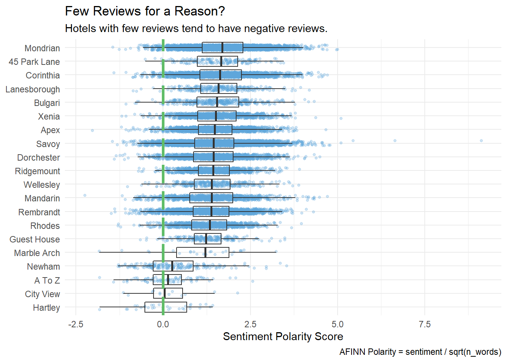
2.1.2 STM
Prepare the data by creating a document-term matrix, just as you would with LDA, except this time use the cast_dfm() to create a document feature matrix for the quanteda package (the stm package uses quanteda). As LDA, you will improve performance by removing infrequently appearing tokens, this time with tm::removeSparseTemrs().
sawyer_dfm <- sawyer_tokens %>%
count(chapter, word_stem) %>%
cast_dfm(document = chapter, term = word_stem, value = n) %>%
quanteda::dfm_trim(min_docfreq = 0.1, docfreq_type = "prop")
sawyer_dfm## Document-feature matrix of: 35 documents, 1,213 features (76.6% sparse).
## features
## docs _do_ _got_ _is_ _will_ advantage adventure afraid afternoon age air
## 1 3 1 1 3 2 1 2 1 1 2
## 2 0 0 0 0 0 0 0 1 0 1
## 3 0 0 1 0 0 0 0 0 1 3
## 4 0 0 1 0 0 0 3 0 3 1
## 5 0 0 0 0 0 0 0 0 2 0
## 6 0 0 1 1 0 0 0 0 0 1
## [ reached max_ndoc ... 29 more documents, reached max_nfeat ... 1,203 more features ]Create a topic model with stm::stm(). Parameter K specifies the number of topics. In LDA I used perplexity to determine the optimal number of clusters, in part because that is the only optimizing metric it LDA() offers. stm offers other metrics, including the held-out likelihood and coherence. Here are models with 5 - 50 topics. This process can take a while, but the furrr package and future_map() function leverage parallel processing to make it quicker.
## Warning: package 'furrr' was built under R version 4.0.3## Loading required package: future## Warning: package 'future' was built under R version 4.0.3## Warning: Strategy 'multiprocess' is deprecated in future (>= 1.20.0). Instead,
## explicitly specify either 'multisession' or 'multicore'. In the current R
## session, 'multiprocess' equals 'multisession'.sawyer_stm_mdls <- data_frame(K = seq(from = 5, to = 50, by = 5)) %>%
mutate(mdl = future_map(K, ~stm(sawyer_dfm, K = ., verbose = FALSE),
.options = furrr_options(seed = 123)))## Warning: `data_frame()` is deprecated as of tibble 1.1.0.
## Please use `tibble()` instead.
## This warning is displayed once every 8 hours.
## Call `lifecycle::last_warnings()` to see where this warning was generated.## Loading required package: quanteda## Warning: Problem with `mutate()` input `mdl`.
## i package 'quanteda' was built under R version 4.0.2
## i Input `mdl` is `future_map(K, ~stm(sawyer_dfm, K = ., verbose = FALSE), .options = furrr_options(seed = 123))`.## Warning: package 'quanteda' was built under R version 4.0.2## Package version: 2.1.2## Parallel computing: 2 of 8 threads used.## See https://quanteda.io for tutorials and examples.##
## Attaching package: 'quanteda'## The following object is masked from 'package:utils':
##
## View## Loading required package: quanteda## Warning: Problem with `mutate()` input `mdl`.
## i package 'quanteda' was built under R version 4.0.2
## i Input `mdl` is `future_map(K, ~stm(sawyer_dfm, K = ., verbose = FALSE), .options = furrr_options(seed = 123))`.
## Warning: package 'quanteda' was built under R version 4.0.2## Package version: 2.1.2## Parallel computing: 2 of 8 threads used.## See https://quanteda.io for tutorials and examples.##
## Attaching package: 'quanteda'## The following object is masked from 'package:utils':
##
## View## Loading required package: quanteda## Warning: Problem with `mutate()` input `mdl`.
## i package 'quanteda' was built under R version 4.0.2
## i Input `mdl` is `future_map(K, ~stm(sawyer_dfm, K = ., verbose = FALSE), .options = furrr_options(seed = 123))`.
## Warning: package 'quanteda' was built under R version 4.0.2## Package version: 2.1.2## Parallel computing: 2 of 8 threads used.## See https://quanteda.io for tutorials and examples.##
## Attaching package: 'quanteda'## The following object is masked from 'package:utils':
##
## View## Loading required package: quanteda## Warning: Problem with `mutate()` input `mdl`.
## i package 'quanteda' was built under R version 4.0.2
## i Input `mdl` is `future_map(K, ~stm(sawyer_dfm, K = ., verbose = FALSE), .options = furrr_options(seed = 123))`.
## Warning: package 'quanteda' was built under R version 4.0.2## Package version: 2.1.2## Parallel computing: 2 of 8 threads used.## See https://quanteda.io for tutorials and examples.##
## Attaching package: 'quanteda'## The following object is masked from 'package:utils':
##
## View## Loading required package: quanteda## Warning: Problem with `mutate()` input `mdl`.
## i package 'quanteda' was built under R version 4.0.2
## i Input `mdl` is `future_map(K, ~stm(sawyer_dfm, K = ., verbose = FALSE), .options = furrr_options(seed = 123))`.
## Warning: package 'quanteda' was built under R version 4.0.2## Package version: 2.1.2## Parallel computing: 2 of 8 threads used.## See https://quanteda.io for tutorials and examples.##
## Attaching package: 'quanteda'## The following object is masked from 'package:utils':
##
## View## Loading required package: quanteda## Warning: Problem with `mutate()` input `mdl`.
## i package 'quanteda' was built under R version 4.0.2
## i Input `mdl` is `future_map(K, ~stm(sawyer_dfm, K = ., verbose = FALSE), .options = furrr_options(seed = 123))`.
## Warning: package 'quanteda' was built under R version 4.0.2## Package version: 2.1.2## Parallel computing: 2 of 8 threads used.## See https://quanteda.io for tutorials and examples.##
## Attaching package: 'quanteda'## The following object is masked from 'package:utils':
##
## View## Loading required package: quanteda## Warning: Problem with `mutate()` input `mdl`.
## i package 'quanteda' was built under R version 4.0.2
## i Input `mdl` is `future_map(K, ~stm(sawyer_dfm, K = ., verbose = FALSE), .options = furrr_options(seed = 123))`.
## Warning: package 'quanteda' was built under R version 4.0.2## Package version: 2.1.2## Parallel computing: 2 of 8 threads used.## See https://quanteda.io for tutorials and examples.##
## Attaching package: 'quanteda'## The following object is masked from 'package:utils':
##
## View## Loading required package: quanteda## Warning: Problem with `mutate()` input `mdl`.
## i package 'quanteda' was built under R version 4.0.2
## i Input `mdl` is `future_map(K, ~stm(sawyer_dfm, K = ., verbose = FALSE), .options = furrr_options(seed = 123))`.
## Warning: package 'quanteda' was built under R version 4.0.2## Package version: 2.1.2## Parallel computing: 2 of 8 threads used.## See https://quanteda.io for tutorials and examples.##
## Attaching package: 'quanteda'## The following object is masked from 'package:utils':
##
## Viewheldout <- make.heldout(sawyer_dfm)
k_result <- sawyer_stm_mdls %>%
mutate(exclusivity = map(mdl, exclusivity),
semantic_coherence = map(mdl, semanticCoherence, sawyer_dfm),
eval_heldout = map(mdl, eval.heldout, heldout$missing),
residual = map(mdl, checkResiduals, sawyer_dfm),
bound = map_dbl(mdl, ~max(.$convergence$bound)),
lfact = map_dbl(mdl, ~lfactorial(.$settings$dim$K)),
lbound = bound + lfact,
iterations = map_dbl(mdl, ~length(.$convergence$bound)))
k_result %>%
transmute(K,
`Lower bound` = lbound,
Residuals = map_dbl(residual, "dispersion"),
`Semantic coherence` = map_dbl(semantic_coherence, mean),
`Held-out likelihood` = map_dbl(eval_heldout, "expected.heldout")) %>%
gather(Metric, Value, -K) %>%
ggplot(aes(K, Value, color = Metric)) +
geom_line(size = 1.5, alpha = 0.7, show.legend = FALSE) +
facet_wrap(~Metric, scales = "free_y") +
labs(x = "K (number of topics)",
y = NULL,
title = "Model diagnostics by number of topics",
subtitle = "These diagnostics indicate that a good number of topics would be around 60")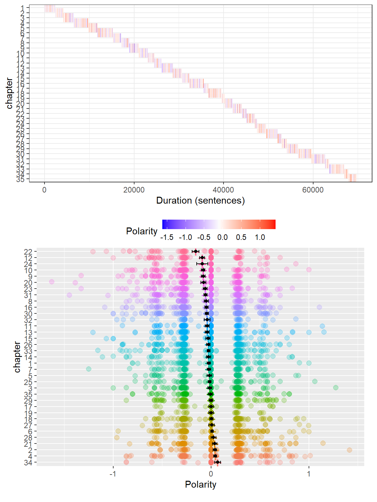 The held-out likelihood is highest between 30 and 50, and the residuals are lowest at 20, so 30 might be the right number. Semantic coherence is maximized when the most probable words in a given topic frequently co-occur together. Coherence tends to fall as exclusivity increases. You’ll want the topic size that balances the trade-off.
k_result %>%
select(K, exclusivity, semantic_coherence) %>%
filter(K %in% c(20, 25, 30)) %>%
unnest(cols = c(exclusivity, semantic_coherence)) %>%
mutate(K = as.factor(K)) %>%
ggplot(aes(semantic_coherence, exclusivity, color = K)) +
geom_point(size = 2, alpha = 0.7) +
labs(x = "Semantic coherence",
y = "Exclusivity",
title = "Comparing exclusivity and semantic coherence",
subtitle = "Models with fewer topics have higher semantic coherence for more topics, but lower exclusivity")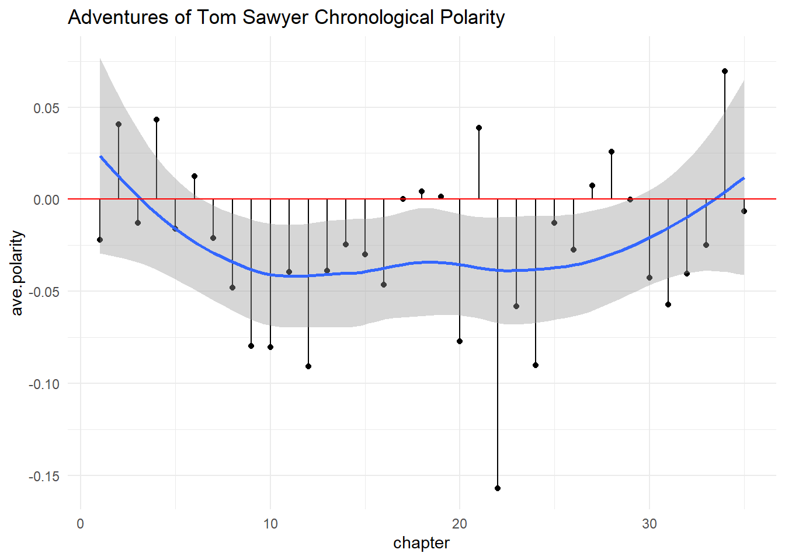
It looks like k = 30 may be optimal.
Like LDA(), stm() returns two outputs: a “beta” matrix of probabilities of terms belonging to topics; a “gamma” matrix of probabilities of topics contributing to documents. The tidytext package provides a tidy() method for extracting these matrices.
sawyer_stm_beta <- tidy(sawyer_stm, matrix = "beta")
sawyer_stm_gamma <- tidy(sawyer_stm, matrix = "gamma", document_names = rownames(sawyer_dfm)) I have 30 topics here, so it would be hard to show the top words per topic, but here are the first six topics.
sawyer_stm_beta %>%
filter(topic <= 6) %>%
group_by(topic) %>%
slice_max(order_by = beta, n = 10, with_ties = FALSE) %>%
mutate(term = reorder_within(term, beta, topic)) %>%
ggplot(aes(x = term, y = beta, fill = factor(topic))) +
geom_col(show.legend = FALSE) +
scale_fill_manual(values = RColorBrewer::brewer.pal(n = 6, name = "Set2"), name = "Topic") +
scale_x_reordered() +
coord_flip() +
facet_wrap(~ topic, scales = "free") +
labs(title = "STM Beta Matrix for first six topics",
subtitle = "Showing top 10 word probabilities")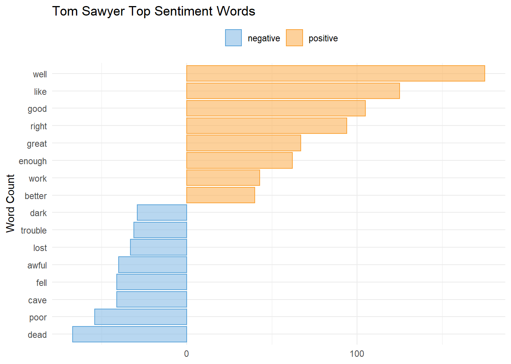
Here is a Word cloud representation.
colors6 <- RColorBrewer::brewer.pal(n = 6, name = "Set2")
x <- map(c(1:2), ~ with(sawyer_stm_beta %>% filter(topic == .x),
wordcloud::wordcloud(term, beta, max.words = 20,
colors = colors6[.x])))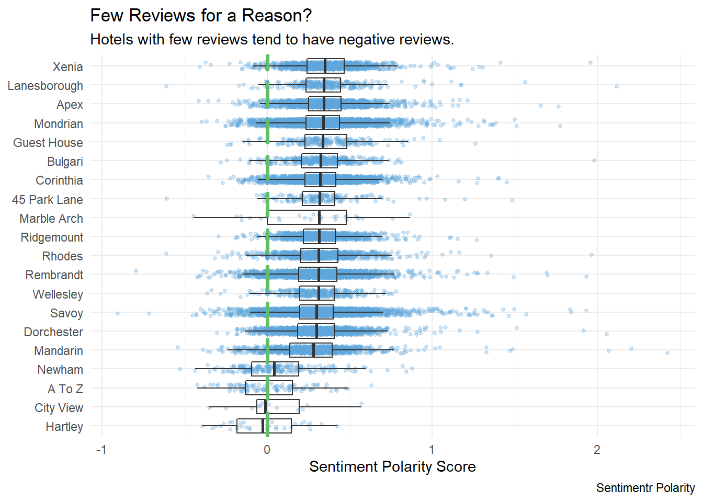
And here are the most prevalent topics across chapters.
top_terms <- sawyer_stm_beta %>%
group_by(topic) %>%
slice_max(order_by = beta, n = 7) %>%
summarise(.groups = "drop", terms = list(term)) %>%
mutate(terms = map(terms, paste, collapse = ", ")) %>%
unnest(terms)
sawyer_stm_gamma %>%
group_by(topic) %>%
summarize(.groups = "drop", gamma = mean(gamma)) %>%
left_join(top_terms, by = "topic") %>%
mutate(topic = paste("topic", topic),
topic = fct_reorder(topic, gamma)) %>%
slice_max(order_by = gamma, n = 10) %>%
ggplot(aes(x = topic, y = gamma, label = terms)) +
geom_col(fill = "#D8A7B1", show.legend = FALSE) +
geom_text(hjust = 0, nudge_y = 0.0005, size = 3) +
coord_flip() +
scale_y_continuous(expand = c(0,0),
limits = c(0, 0.09),
labels = scales::percent_format()) +
theme_minimal() +
theme(panel.grid = element_blank()) +
labs(x = NULL, y = expression(gamma),
title = "Top 10 STM topics by prevalence in The Adentures of Tom Sawyer",
subtitle = "With top words in each topic")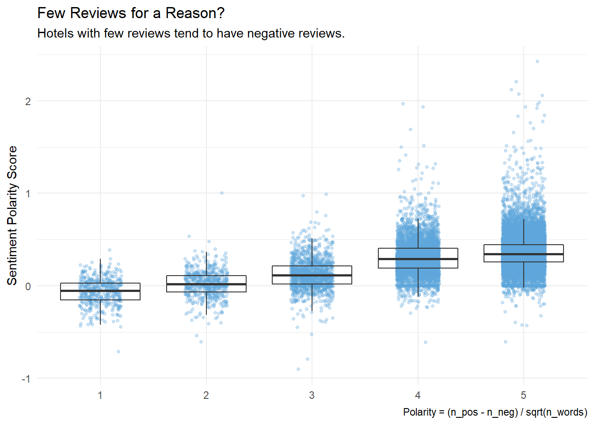
Another way to look at the betas is to identify terms that had the greatest difference in beta between the first and second most probable topic. A good way to do this is with their log ratio, \(log_2(\beta_2 / \beta_1)\). Filter for relatively common words having a beta greater than 1/100 in at least one topic.
sawyer_stm_beta %>%
mutate(topic = paste0("topic", topic)) %>%
group_by(term) %>%
slice_max(order_by = beta, n = 2) %>%
summarize(.groups = "drop", min_beta = min(beta)+.001, max_beta = max(beta)+.001) %>%
filter(max_beta > 0.01) %>%
mutate(log_ratio = log2(max_beta / min_beta)) %>%
top_n(n = 20, w = abs(log_ratio)) %>%
arrange(-log_ratio) %>%
ggplot(aes(x = fct_rev(fct_inorder(term)), y = log_ratio)) +
geom_col(fill = "#D8A7B1") +
theme_minimal() +
coord_flip() +
labs(title = "STM beta matrix log ratios",
subtitle = "showing greatest differences in beta values",
x = "", y = "log(beta ratio)")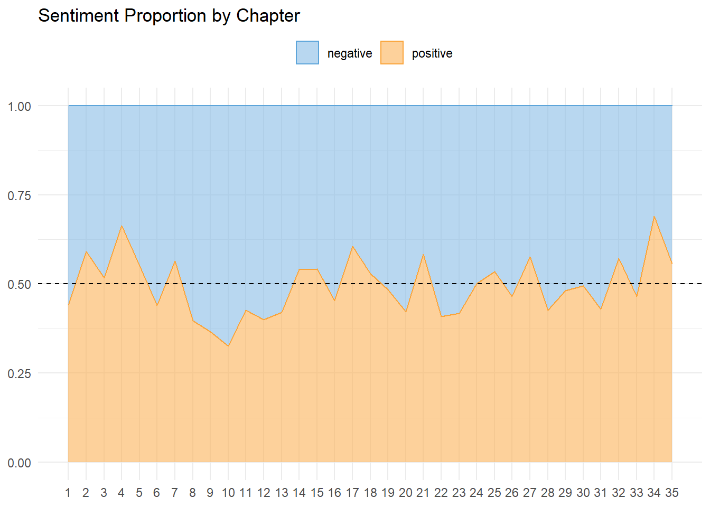
2.2 Sentiment Analysis
A typical sentiment analysis involves unnesting tokens with unnest_tokens(), assigning sentiments with inner_join(sentiments), counting tokens with count(), and summarizing and visualizing.
The tidytext package contains four sentiment lexicons, all based on unigrams.
- nrc. binary “yes”/“no” for categories positive, negative, anger, anticipation, disgust, fear, joy, sadness, surprise, and trust.
- bing. “positive”/“negative” classification.
- AFINN. score between -5 (most negative) and 5 (most positive).
- loughran. “positive”/“negative”/“litigious”/“uncertainty”/“constraining”/“superflous” classification.
You can view the sentiment assignments with get_sentiments(lexicon = c("afinn", "bing", nrc", "laughlin"))
x1 <- get_sentiments(lexicon = "nrc") %>%
count(sentiment) %>%
mutate(lexicon = "nrc")
x2 <- get_sentiments(lexicon = "bing") %>%
count(sentiment) %>%
mutate(lexicon = "bing")
x3 <- get_sentiments(lexicon = "afinn") %>%
count(value) %>%
mutate(lexicon = "afinn") %>%
mutate(sentiment = as.character(value)) %>%
select(-value)
x4 <- get_sentiments(lexicon = "loughran") %>%
count(sentiment) %>%
mutate(lexicon = "loughran")
x <- bind_rows(x1, x2, x3, x4)
ggplot(x, aes(x = fct_reorder(sentiment, n), y = n, fill = lexicon)) +
geom_col(show.legend = FALSE) +
coord_flip() +
labs(title = "Sentiment Counts", x = "", y = "") +
facet_wrap(~ lexicon, scales = "free")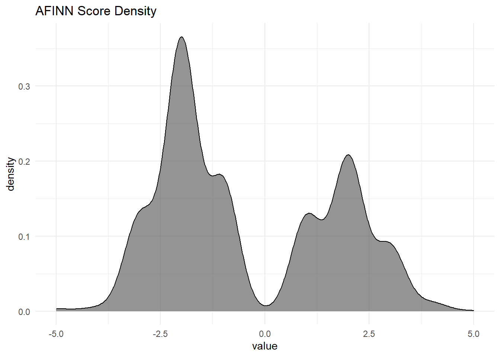
Here is a sentiment analysis of sections of 80 lines of Jane Austin’s books. (Small sections may not have enough words to get a good estimate of sentiment, and large sections can wash out the narrative structure. 80 lines seems about right.)
# austin_tidy %>%
# inner_join(get_sentiments("bing")) %>%
# count(book, index = linenumber %/% 80, sentiment) %>%
# pivot_wider(names_from = sentiment, values_from = n, values_fill = list(n = 0)) %>%
# mutate(sentiment = positive - negative) %>%
# ggplot(aes(x = index, y = sentiment, fill = book)) +
# geom_col(show.legend = FALSE) +
# facet_wrap(~book, ncol = 2, scales = "free_x")Fair to say Jane Austin novels tend to have a happy ending? The three sentiment lexicons provide different views of THE data. Here is a comparison of the lexicons using one of Jane Austin’s novels, “Pride and Prejudice”.
# # AFINN lexicon measures sentiment with a numeric score between -5 and 5.
# afinn <- austin_tidy %>%
# filter(book == "Pride & Prejudice") %>%
# inner_join(get_sentiments("afinn"), by = "word") %>%
# group_by(index = linenumber %/% 80) %>%
# summarise(sentiment = sum(value)) %>%
# mutate(method = "AFINN")
#
# # Bing and nrc categorize words in a binary fashion, either positive or negative.
# bing <- austin_tidy %>%
# filter(book == "Pride & Prejudice") %>%
# inner_join(get_sentiments("bing"), by = "word") %>%
# count(index = linenumber %/% 80, sentiment) %>%
# pivot_wider(names_from = sentiment, values_from = n, values_fill = list(n = 0)) %>%
# mutate(sentiment = positive - negative) %>%
# mutate(method = "Bing") %>%
# select(index, sentiment, method)
#
# nrc <- austin_tidy %>%
# filter(book == "Pride & Prejudice") %>%
# inner_join(get_sentiments("nrc") %>% filter(sentiment %in% c("positive", "negative")), by = "word") %>%
# count(index = linenumber %/% 80, sentiment) %>%
# pivot_wider(names_from = sentiment, values_from = n, values_fill = list(n = 0)) %>%
# mutate(sentiment = positive - negative) %>%
# mutate(method = "NRC") %>%
# select(index, sentiment, method)
#
# bind_rows(afinn, bing, nrc) %>%
# ggplot(aes(index, sentiment, fill = method)) +
# geom_col(show.legend = FALSE) +
# facet_wrap(~method, ncol = 1, scales = "free_y")In this example, and in general, NRC sentiment tends to be high, AFINN sentiment has more variance, and Bing sentiment finds longer stretches of similar text. However, all three agree roughly on the overall trends in the sentiment through a narrative arc.
What are the top-10 positive and negative words? Using the Bing lexicon, get the counts, then group_by(sentiment) and top_n() to the top 10 in each category.
# austin_tidy %>%
# filter(book == "Pride & Prejudice") %>%
# inner_join(get_sentiments("bing"), by = "word") %>%
# count(word, sentiment, sort = TRUE) %>%
# group_by(sentiment) %>%
# top_n(n = 10, wt = n) %>%
# ggplot(aes(x = fct_reorder(word, n), y = n, fill = sentiment)) +
# geom_col(show.legend = FALSE) +
# facet_wrap(~sentiment, scales = "free_y") +
# coord_flip() +
# labs(y = "Contribution to Sentiment",
# x = "")Uh oh, “miss” is a red-herring - in Jane Austin novels it often refers to an unmarried woman. Drop it from the analysis by appending it to the stop-words list.
# austin_tidy %>%
# anti_join(bind_rows(stop_words,
# tibble(word = c("miss"), lexicon = c("custom")))) %>%
# filter(book == "Pride & Prejudice") %>%
# inner_join(get_sentiments("bing")) %>%
# count(word, sentiment, sort = TRUE) %>%
# group_by(sentiment) %>%
# top_n(n = 10, wt = n) %>%
# ggplot(aes(x = fct_reorder(word, n), y = n, fill = sentiment)) +
# geom_col(show.legend = FALSE) +
# facet_wrap(~sentiment, scales = "free_y") +
# coord_flip() +
# labs(y = "Contribution to Sentiment",
# x = "")Better!
A common way to visualize sentiments is with a word cloud.
# austin_tidy %>%
# anti_join(bind_rows(stop_words,
# tibble(word = c("miss"), lexicon = c("custom")))) %>%
# filter(book == "Pride & Prejudice") %>%
# count(word) %>%
# with(wordcloud(word, n, max.words = 100))comparison.cloud is another implementation of a word cloud. It takes a matrix input.
# x <- austin_tidy %>%
# anti_join(bind_rows(stop_words,
# tibble(word = c("miss"), lexicon = c("custom")))) %>%
# inner_join(get_sentiments("bing")) %>%
# filter(book == "Pride & Prejudice") %>%
# count(word, sentiment, sort = TRUE) %>%
# pivot_wider(names_from = sentiment, values_from = n, values_fill = list(n = 0)) %>%
# as.data.frame()
# rownames(x) <- x[,1]
# comparison.cloud(x[, 2:3])
# rm(x)Sometimes it makes more sense to analyze entire sentences. Specify unnest_tokens(..., token = "sentences") to override the default token = "word".
# austen_books() %>%
# group_by(book) %>%
# mutate(linenumber = row_number(),
# chapter = cumsum(str_detect(text, regex("^chapter [\\divxlc]",
# ignore_case = TRUE)))) %>%
# ungroup() %>%
# unnest_tokens(output = word, input = text, token = "sentences")2.2.1 N-Grams
Create n-grams by specifying unnest_tokens(..., token = "ngrams", n) where n = 2 is a bigram, etc. To remove the stop words, separate the n-grams, then filter on the stop_words data set.
# austin.2gram <- austen_books() %>%
# group_by(book) %>%
# mutate(linenumber = row_number(),
# chapter = cumsum(str_detect(text, regex("^chapter [\\divxlc]",
# ignore_case = TRUE)))) %>%
# ungroup() %>%
# unnest_tokens(output = bigram, input = text, token = "ngrams", n = 2)
#
# austin.2gram <- austin.2gram %>%
# separate(bigram, c("word1", "word2"), sep = " ") %>%
# filter(!word1 %in% stop_words$word &
# !word2 %in% stop_words$word &
# !is.na(word1) & !is.na(word2)) %>%
# unite(bigram, word1, word2, sep = " ")
#
# austin.2gram %>%
# count(book, bigram, sort = TRUE)Here are the most commonly mentioned streets in Austin’s novels.
# austin.2gram %>%
# separate(bigram, c("word1", "word2"), sep = " ") %>%
# filter(word2 == "street") %>%
# count(book, word1, sort = TRUE)Use the TF-IDF statistic to compare words among documents. Calculate the cosine similarity, the angle in multidimensional space between two vectors (\(cos(\theta) = (A \cdot B) / ||A||||B||)\)), to determine how similar two items are. Use widyr::pairwise_similarity() to calculate the cosine similarity of all pairs of items in a tidy table.
# austen %>%
# unnest_tokens(output = "word", input = "text", token = "words") %>%
# anti_join(stop_words, by = "word") %>%
# count(book, word) %>%
# bind_tf_idf(term = word, document = book, n = n) %>%
# pairwise_similarity(item = book, feature = word, value = tf_idf) %>%
# arrange(desc(similarity))# austen_books() %>%
# group_by(book) %>%
# mutate(linenumber = row_number(),
# chapter = cumsum(str_detect(text, regex("^chapter [\\divxlc]",
# ignore_case = TRUE)))) %>%
# ungroup() %>%
# unnest_tokens(output = bigram, input = text, token = "ngrams", n = 2) %>%
# separate(bigram, c("word1", "word2"), sep = " ") %>%
# filter(!word1 %in% stop_words$word &
# !word2 %in% stop_words$word &
# !is.na(word1) & !is.na(word2)) %>%
# unite(bigram, word1, word2, sep = " ")
# austin.2gram %>%
# count(book, bigram) %>%
# bind_tf_idf(bigram, book, n) %>%
# group_by(book) %>%
# top_n(n = 10, wt = tf_idf) %>%
# ggplot(aes(x = fct_reorder(bigram, n), y = tf_idf, fill = book)) +
# geom_col(show.legend = FALSE) +
# facet_wrap(~book, scales = "free_y", ncol = 2) +
# labs(y = "tf-idf of bigram to novel") +
# coord_flip() A good way to visualize bigrams is with a network graph. Packages igraph and ggraph provides tools for this purpose.
# set.seed(2016)
#
# austen_books() %>%
# group_by(book) %>%
# mutate(linenumber = row_number(),
# chapter = cumsum(str_detect(text, regex("^chapter [\\divxlc]",
# ignore_case = TRUE)))) %>%
# ungroup() %>%
# unnest_tokens(output = bigram, input = text, token = "ngrams", n = 2) %>%
# separate(bigram, c("word1", "word2"), sep = " ") %>%
# filter(!word1 %in% stop_words$word &
# !word2 %in% stop_words$word &
# !is.na(word1) & !is.na(word2)) %>%
# count(word1, word2) %>%
# filter(n > 20) %>%
# graph_from_data_frame() %>% # creates unformatted "graph"
# ggraph(layout = "fr") +
# geom_edge_link(aes(edge_alpha = n),
# show.legend = FALSE,
# arrow = grid::arrow(type = "closed",
# length = unit(.15, "inches")),
# end_cap = circle(.07, 'inches')) +
# geom_node_point(color = "lightblue",
# size = 5) +
# geom_node_text(aes(label = name), vjust = 1, hjust = 1) +
# theme_void()If you want to count the number of times that two words appear within the same document, or to see how correlated they are, widen the data with the widyr package.
# austen_books() %>%
# filter(book == "Pride & Prejudice") %>%
# mutate(section = row_number() %/% 10) %>%
# filter(section > 0) %>%
# unnest_tokens(word, text) %>%
# filter(!word %in% stop_words$word) %>%
# pairwise_count(word, section, sort = TRUE)The correlation among words is how often they appear together relative to how often they appear separately. The phi coefficient is defined
\[\phi = \frac{n_{11}n_{00} - n_{10}n_{01}}{\sqrt{n_{1.}n_{0.}n_{.1}n_{.0}}}\]
where \(n_{10}\) means number of times section has word x, but not word y, and \(n_{1.}\) means total times section has word x. This lets us pick particular interesting words and find the other words most associated with them.
# austen_books() %>%
# filter(book == "Pride & Prejudice") %>%
# mutate(section = row_number() %/% 10) %>%
# filter(section > 0) %>%
# unnest_tokens(word, text) %>%
# filter(!word %in% stop_words$word) %>%
# pairwise_cor(word, section, sort = TRUE) %>%
# filter(item1 %in% c("elizabeth", "pounds", "married", "pride")) %>%
# group_by(item1) %>%
# top_n(n = 4) %>%
# ungroup() %>%
# mutate(item2 = reorder(item2, correlation)) %>%
# ggplot(aes(x = item2, y = correlation)) +
# geom_bar(stat = "identity") +
# facet_wrap(~ item1, scales = "free") +
# coord_flip()You can use the correlation to set a threshold for a graph.
2.2.2 Converting to and from non-tidy formats
One of the most common objects in text mining packages is the document term matrix (DTM) where each row is a document, each column a term, and each value an appearance count. The broom package contains functions to convert between DTM and tidy formats.
Convert a DTM object into a tidy data frame with tidy(). Convert a tidy object into a sparse matrix with cast_sparse(), into a DTM with cast_dtm(), and into a “dfm” for quanteda with cast_dfm().
Create a tidy version of AssociatedPress with tidy().
The document-feature matrix dfm class from the quanteda text-mining package is another implementation of a document-term matrix. Here are the terms most specific (highest tf-idf) from each of four selected inaugural addresses.
And here is word frequency trend ocer time for six selected terms. (problem with extract() below).
Cast tidy data into document-term matrix with cast_dtm(), quanteda’s dfm with cast_dfm(), and sparese matrix with cast_sparse().
An untokenized document collection is called a corpus. The corpuse may include metadata, such as ID, date/time, title, language, etc. Corpus metadata is usually stored as lists. Use tidy() to construct a table, one row per document.
2.2.3 Example
Library tm.plugin.webmining connects to online feeds to retrieve news articles based on a keyword.
2.3 Text Classification Modeling
The tweets data set contains politically charged tweets. Can you train a model to predict the account_type (Left or Right) from the tweet text?
Prepare the data by filtering to just the relevant tweets, tokenizing, and creatiing a document-term matrix with TFIDF weighting. If resources are an issue, experiment with values of parameter sparse in dt::removeSparseTerms() to get less terms. Below, sparse = 0.9999 finally gets a respectable term count 14% the size of the orginal count.
Split the data into an 80:20 train:test split and fit a random forest model.
2.4 Named Entity Recognition
The qdap package provides parsing tools for preparing transcript data.
For example, freq_terms() parses text and counts the terms.
You can also plot the terms.
There are two kinds of the corpus data types, the permanent corpus, PCorpus, and the volatile corpus, VCorpus. The volatile corpus is held in RAM rather than saved to disk. Create a volatile corpus with tm::vCorpous(). vCorpous() takes either a text source created with tm::VectorSource() or a dataframe source created with Dataframe Source() where the input dataframe has cols doc_id, text_id and zero or more metadata columns.
In bag of words text mining, cleaning helps aggregate terms, especially words with common stems like “miner” and “mining”. There are several functions useful for preprocessing: tolower(), tm::removePunctuation(), tm::removeNumbers(), tm::stripWhiteSpace(), and removeWords(). Apply these functions to the documents in a VCorpus object with tm_map(). If the function is not one of the pre-defined functions, wrap it in content_transformer(). Another preprocessing function is stemDocument().
The qdap package offers other preprocessing functions.
tm::stopwords("en") returns a vector of stop words. You can add to the list with concatenation.
tm::stemDocument() and tm::stemCompletion() reduce the variation in terms.
To perform the analysis of the tweets, convert the corpus into either a document term matrix (DTM, documents as rows, terms as cols), or a term document matrix (TDM, terms as rows, documents as cols).
2.5 Tidy Text
Here are four Jane Austin books from the janeaustenr. “Sense & Sensibility” acts as the baseline count, and the other books are faceted for comparison.
2.6 Appendix: Regular Expressions
There are two choices for string manipulation. Base R has grep() and gsub(). Or you can use the stringr package. Both will use the same regular expression patterns. Here are some important ones.
2.6.1 Base R
grep() returns the indices of pattern matches in a vector of strings. Specify parameter value = TRUE to get the strings that match the pattern.
2.6.2 stringr
The stringr package is a simple wrapper around the more complete stringi package.
Example of finding rows in data frame of book text with “chapter [#]”. In regex(), “[]” means “any of”, “\d” is any number, and “v”, “x”, “l”, and “c” are just roman numerals. Here is the word-count per chapter.
austen <- janeaustenr::austen_books()
chapter_regex <- stringr::regex("^chapter [\\divxlc]", ignore_case = TRUE)
austen %>%
filter(book == "Emma") %>%
mutate(linenumber = row_number(),
chapter = cumsum(str_detect(text, chapter_regex))) %>%
ungroup() %>%
unnest_tokens(output = "word", input = text, token = "words") %>%
count(chapter)## # A tibble: 56 x 2
## chapter n
## <int> <int>
## 1 0 6
## 2 1 3326
## 3 2 1767
## 4 3 1878
## 5 4 3537
## 6 5 1992
## 7 6 2777
## 8 7 2427
## 9 8 4316
## 10 9 4780
## # ... with 46 more rowsstr_c()concatenates strings, similar to withpaste()andpaste0().
## [1] "hello world"str_replace(string, pattern, replacment)replacespatternwithreplacement.
## [1] "If the future's looking dark"str_replace_na(string, replacement)replaces NAs.
## [1] "We're the ones " "who " "have to shine"str_split(string, pattern, simplify = FALSE)splitsstringbypatterninto a list of vectors, or matrix ifsimplify = TRUE.
## [,1] [,2] [,3] [,4] [,5] [,6]
## [1,] "If" "there's" "no" "one" "in" "control"str_c(..., sep)concatenates a vector of strings, separated bysep.
## [1] "we're the ones who draw the line"str_sub(string, start, end) returns substring of string from start to end. Use negatives to start from the end of the string.
## [1] "Altho"## [1] "imes"str_length(string)returns the number of characters in a string.
## [1] 30str_detect(string, pattern)returns booleans wherestringmatchespattern.
## [1] FALSE FALSE TRUEstr_match(string, pattern)returns matching strings wherestringmatchespattern.
## [,1]
## [1,] NA
## [2,] NA
## [3,] "wings"str_subset(string, pattern)returns string matches wherestringmatchespattern.
## [1] "has wings"str_count(string, pattern)returns a count of matches wherestringmatchespattern.
## [1] 0 0 1str_extract(string, pattern)returns the part of thestringmatchingpattern.
## [1] " the" " to "2.6.3 Regular Expressions
The stringr package functions use ICU regular expressions. Here are common regular expressions.
str_subset(sawyer$text, "^tom") # starts with "tom"
str_subset(sawyer$text, "[0-9]") # contains a digit
str_subset(sawyer$text, "^[0-9]") # begins with a digit
str_subset(sawyer$text, "[^0-9]") # does not contain a digit
str_subset(sawyer$text, ".handsome.") # contains "handsome"
sawyer %>% filter(str_detect(sawyer$text, "handsome")) # rows with "handsome"
sawyer %>% filter(str_detect(sawyer$text, ".handsome.")) # same thing
# Using perl-style regexp,
# "(.)" is a subexpression (defined with parens) consisting of any character
# defined with a dot. "\\U" makes the next character uppercase. \\1 is a
# reference to subexpression 1
sub("(.)", ("\\U\\1"), sawyer_tokens$word, perl=TRUE)
str_to_title(sawyer_tokens$word) # nearly the same - converts first letter, not char
str_to_title(sawyer$text)
# [] defines a set of chars
str_subset(sawyer$text, "^[qQ]") # starts with "q" or "Q"
str_subset(sawyer$text, "(^[\\_])(.*-)") # starts with "_" and contains "-"
str_subset(sawyer$text, "dog.*tricks|tricks.*dog") # contains "dog" & "tricks"2.7 Appendix: tidytext
The tidy text format is a table with one token (meaningful unit of text, such as a word) per row. The tidytext package assists with the major tasks in text analysis.
A typical text analysis using tidy data principles unnests tokens with unnest_tokens(), anti-joins unimportant “stop words” from tidytext::stop_words, and summarizes token counts count(). In between you might also reduce words to their stems with SnowballC::wordStem().
Summarize the tidy text into a “bag of words” (table of word frequencies). Once in a bag of words format, you can feed into a word cloud or other ggplot geom.
To perform topic modeling, cast the bag of words into a document term matrix with cast_dtm().
After performing a topic model, cast the output (either a beta matrix or gamma matrix) into tidy format with tidy().
2.8 Appendix: tm
The Text Mining package tm is a text mining framework for importing data, handling a corpus, and creating term-document matrices.
The main structure document structure is a corpus, implemented either as an in-memory volatile corpus VCorpus() or on-disk permanent corpus Pcorpus(). Create a corpus from a directory of text documents
or from a data frame using helper function VectorSource().
A corpus is a list of document objects, each containing meta data and content. Here is the first document of the one I just created.
You can perform transformations on your tm object, including removing extra whitespace tm_map(x, stripWhitespace), converting to lowercase tm_map(x, content_transformer(tolower)), removing stopwords tm_map(x, removeWords, stopwords("english")), and stemming tm_map(x stemDocument).
Some packages (e.g., topicmodels) operate on a “bag of words” representation called a document term matrix. A bag of words is a frequency count of words. Convert the tm object into a matrix with TermDocumentMatrix() or DocumentTermMatrix() (the first presents terms as rows and documents as columns).
Here is a quick analysis of the Russian Tweets data loaded at the beginning of the chapter.